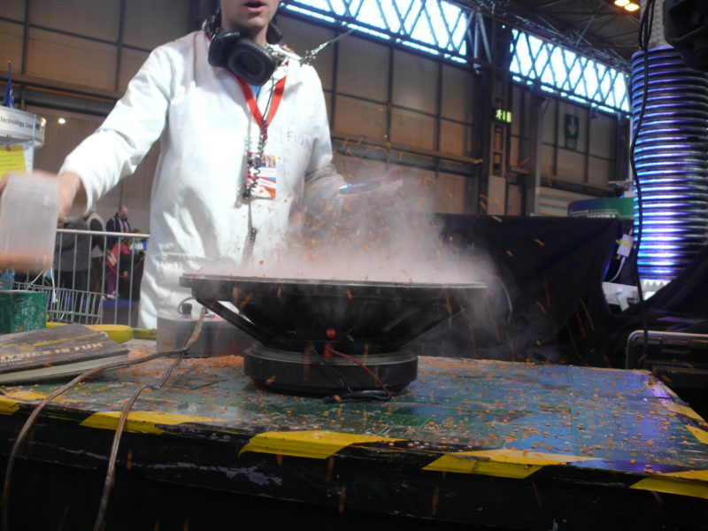
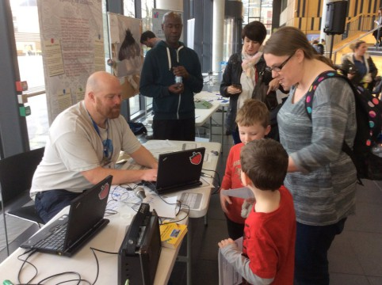

Dividing education into disciplinary boundaries, is not the only way of learning about a subject. Specific disciplinary labels can have stereotypical associations which affect how learners feel about, or engage with, a subject. Therefore, the extent to which learners enjoy or excel in different disciplines may have little to do with their abilities, and more to do with how the subject is portrayed and taught.
Art in Action

Funologists
The practices of coding and electronic ‘making’ have recently entered mainstream education. Their reach has, however, not been universal – and particular groups of pupils (boys, for instance) tend to feel that they are more relevant and accessible than others.

EdLab students facilitating a Sonic Pi workshop
Happy Trails
Students worked with Primary Schools to create inclusive and engaging places of play, to explore the everyday in-between spaces of the city where children and teachers can work together. Students worked with creative collaborators to enable the children to gain an understanding of the built and natural environment.

The final set of workshops took place in MMU’s Brooks Building, where EdLab students helped to deliver activities that engaged the children with the architecture of the space.
Students collaborated with TASC (The Architecture School for Children) on the project How Did Your Garden Grow? It engaged children in a creative exploration of the Piccadilly Gardens story. Students helped children to imaginatively peel back the layers of time revealing how the site has changed, eventually understanding how it is today and what it could be in the future.
“Brave Ideas”: Facilitating Year 9 Girls Tinkering with Code Bugs
As a result of an earlier project aimed at widening the participation of girls in science, engineering, technology and maths (STEM) subjects EdLab facilitated a follow up tinkering session at Whalley Range High School with Year 9 girls. To do this we took along mini codable LED devices called Code Bugs, and engaged the girls in a 90 minute competition to create an interactive page from a children’s book.


EdLab Challenge: Support a digital story trail for a Homeless charity
EdLab MMU and Community Arts North West are working with Petrus Homeless project to support the Hidden Rochdale project, a highly interactive digital trail that will tell the hidden stories of Petrus homeless service-users. Their goal is to take the audience on a provocative and highly engaging journey through Rochdale to uncover digital artifacts that will be concealed in the landscape.

Developed by the Petrus Community working in partnership with Community Arts North West, the project uses writing, spoken word, music, video, animation and mobile technologies, and will culminate in an interactive digital trail that will take the audience on an engaging and creative journey through Rochdale town-centre in 2017.
Junk Percussion workshop by Andrea Vogler
Join Northern Chamber Orchestra’s percussionist Andrea Vogler for a participatory session composing and performing music using an exciting array of junk percussion instruments.
This workshop is supported by EdLab as part of the 2016 Brooks Community Learning Festival.
To attend go to this link and register – Remember to choose the right day
All Welcome at the Community Learning Festival 25 – 27 July 2017
The Community Learning Festival is an exciting and free event happening at Manchester Metropolitan University’s Brooks building on Tuesday, 25 July – Thursday, 27 July 2017, 12 – 6pm.
The festival is a celebration of the diversity of learning happening in the local area. It’s a chance for community learning providers and University projects to come together and enjoy the facilities at the Brooks building for a series of lively and interesting events.

The festival will have a range of activities, workshops, walks and talks over the three days. Each day features workshops on themes like democracy, care, community and the environment. Most importantly, there is always something going on for all ages and interests.
Some of the highlights include:
- Music, rap and spoken word sessions
- Art and textiles workshops mixing creative craft and technology
- Creative walks and digital story trails
- Debates and discussions on local and global issues
- Junk Percussion workshops
- Talks and films on civic action and social justice
The Festival has been organised by the Manchester Met Faculty of Education in association with community partners including Louise Da-Cocodia Education Trust, Hideaway and Hulme Community Garden Centre.
Help us promote the Festival. Images and Workshops highlights to share with your networks via email and social media are available on the EdLab website:
Community Event – 27-7-2016 – Wordsmith Spoken Word Workshop
Are you an aspiring young poet, writer or MC? Do you feel like you have something to say? This workshop will help you find your voice, respond to the issues of the day and give guidance on writing and performance.
This workshop is supported by EdLab as part of the Community Learning Festival at Brooks MMU Hulme taking place from the 26-28th July 2016
To attend go to this link and register – Remember to choose the right day
Community Event – 27-7-2016 – Digital Storytelling and Story Trails – A skill share workshop
This workshop on storytelling is a chance to find out and experience digital storytelling. It will feature the work of Community Arts North West, Petrus Homeless project from Rochdale and the stories of local Hulme residents.
If you are a story teller interested in using mobile technologies or if you have already done work in this area come along to share your experiences and ideas. As part of this workshop you will have a chance to go out on a Story Trail of Hulme.
This workshop is supported by EdLab as part of the 2016 Brooks Community Learning Festival.
To attend go to this link and register – Remember to choose the right day
Community Event – 27-7-2016 -Noisy Toys Workshop at Brooks Community Learning Festival Tues 26th July
Working in groups we will complete various experiments with sound and electronics, building simple electronic instruments using circuits. Each group is given a Circuit Box, which contains useful bits of junk, salvaged from discarded computers.

We will learn how to easily make mechanical acoustic instruments from this treasure. Making new things out of junk is called ‘Upcycling’. We will experiment with basic components of circuitry and touch on electromagnetism and the workings of speaker drivers and electric motors. The sounds that we produce with our instruments can be changed, and we will explore the sonic possibilities that they offer.
We will, of course, also be testing each other’s noses and feeling 1000 watts of bass vibrations with our fingers.
This workshop is supported by EdLab as part of the 2016 Brooks Community Learning Festival.
To attend go to this link and register – Remember to choose the right day
Situate Yourself: Exploring Hulme Story Trails with Petrus Homeless Project
EdLab MMU and Community Arts North West have recently hosted a visit from Petrus Homeless project to the Brooks Building in Hulme. The visit inspired and supported the Hidden Rochdale project, a highly interactive digital trail that will tell the hidden stories of Petrus homeless service-users. Their goal is to take the audience on a provocative and highly engaging journey through Rochdale to uncover digital artifacts that will be concealed in the landscape.
To prepare, the EdLab MMU team worked with Hulme residents to create a mini-trail of Hidden Hulme. During the visit, this trail was explored to experiment with the use of mobile recording technologies, location aware, tagging and tracking technologies.


{kind=link}
{kind=link}
{kind=link}
{kind=link}
Mick Chesterman and James Duggan from the MMU shared advice on creating interactive, digital story trails for smart phones. Some of the key tips included.
- Use simple to use, accessible tech (e.g. QR codes) and free Treasure Hunt apps for phones (e.g. Actionbound)
- Always test your trails
- You can integrate your codes into attractive designs to customise your trail
- Go back and test some more
Mick Chesterman, EdLab MMU project developer shared:
For the test trail we took the approach of using low cost equipment to record local activities and stories in a simple but intimate way. Codes are then displayed where the videos were recorded which draws those doing the trail into new spaces, opening up new experiences and connections to an area.
More info:
The project page for Hidden is here – http://can.uk.com/new-communities/hidden/
The Petrus group will come back and share the results of their digital storytelling workshops at the Brooks Building on the 27th of July as part of the Community Learning Festival.
EdLab Spark: Contribute to a Hulme Archive
Hulme has gone through many generations of building and demolition. It has been a test bed for innovative urban renewal and environmental approaches. The site of the Birley campus and Brooks building has been a topic of much debate and dreaming over the years.
EdLab has inherited various documents which help to tell some of this story. We invite you to help us to archive them by scanning them and putting them online into the Internet Archive project. Local resident Rob Squires has another challenge for you.

These documents of Hulme’s recent history show a rich picture of what is possible with urban planning, permaculture and the imagination of local residents. How can you bring the documents to life and share the stories behind the plans?
Video of Challenge
http://www.youtube.com/watch?v=PGPu_ESaA68
Some information on the specifics of Hulme’s regeneration follows in these links.
More Information:
To get involved in this project, or to work on a challenge which supports the development of this project, contact m.chesterman @mmu.ac.uk or edlab @mmu.ac.uk
Key Partner: Redbricks residents group http://redbricks.org
Key Words: Regeneration, Hulme, residents, sustainable development, collaborative design, urban renewal, urban design, homes for change, Birley Fields, consultation, creative consultation
EdLab Spark: Create a 1-minute creative learning video for ‘Bear Hunt, Chocolate Cake and Bad Things’
Z-arts are a creative space for young people in Hulme promoting and delivering creative learning in all its forms. Between 17th September and 17th December 2016, Z-arts are hosting ‘Bear Hunt, Chocolate Cake and Bad Things’; an interactive experience for children based upon the stories and poetry of well-known author Michael Rosen.
Z-arts would like MMU students to develop a simple pre or post visit creative learning activity inspired by the themes in ‘Bear Hunt, Chocolate Cake and Bad things’, and then create a short 1-minute instruction video for children and families to follow at home. Students taking part in this challenge will have the opportunity to explore the interactive experience in a special preview event with Michael Rosen himself!

For more information about ‘Bear Hunt, Chocolate Cake and Bad Things’ visit the Z-arts web pages: http://www.z-arts.org/events/bear-hunt-chocolate-cake-bad-things/
EdLab Challenge: Dr Who History Primary Activity
This is a time-traveller activity for primary school pupils designed to take them on a journey of historical discovery. We have the resources and spaces to deliver a number of activities spanning different historical periods, and even a leap into the future! Students can access the support of staff and students who have delivered this project previously, in order to support the delivery of this exciting and interactive challenge.
Pupils were rewarded with prizes and many left saying “This was the best trip we have ever been on!”

EdLab Challenge: Pop Up Performance Stall
Most people want to be a performer in one way or other but they may be shy. Can you bring people out of their shell by recording their voice but adding effects to it before you play it back? One example is described below. But you may have your own ideas for what to do for this challenge which involves running a stall.
EdLab was supported by MMU education students to create a pop up activity at the Poetry Together Trailblazer Event. We asked the young people (and older ones too)…
Would you like us to turn you into a Robot?

We had a range of different short poems on technology available to read into a microphone and record into the Audacity programme. An effect was then applied (echo) to make them robotic. The results are below.
Theo
Ali
Fatimah